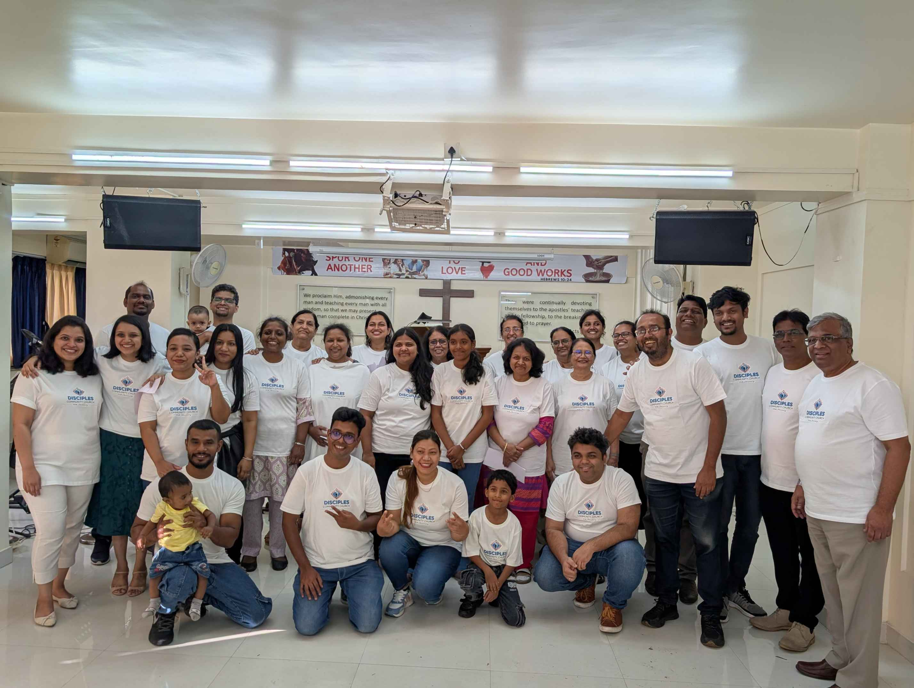
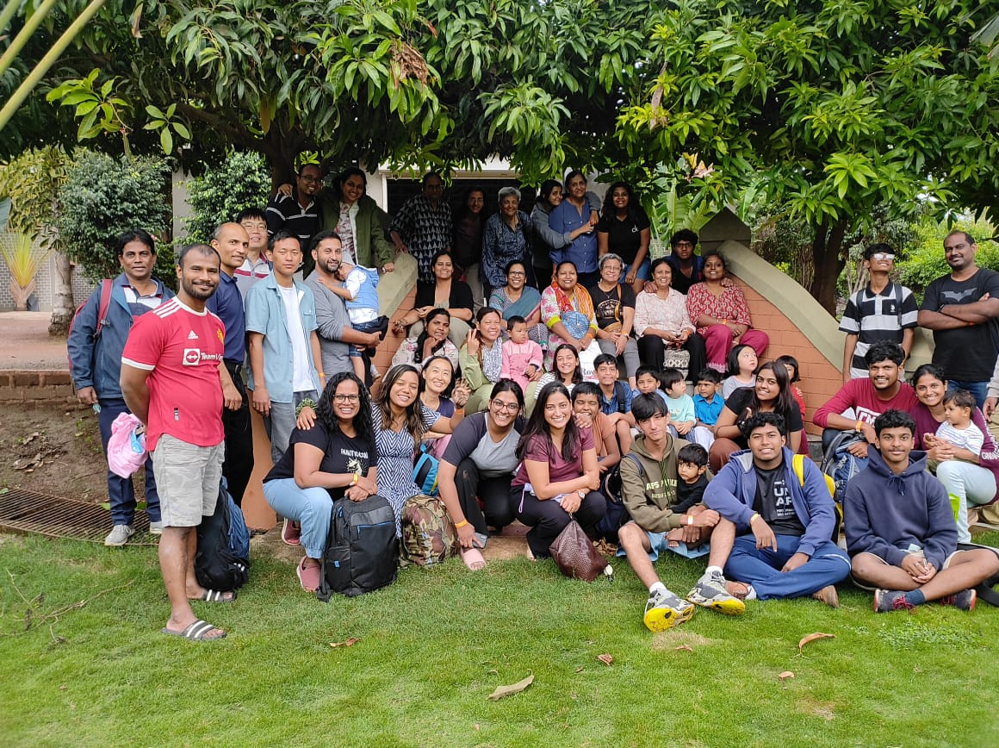
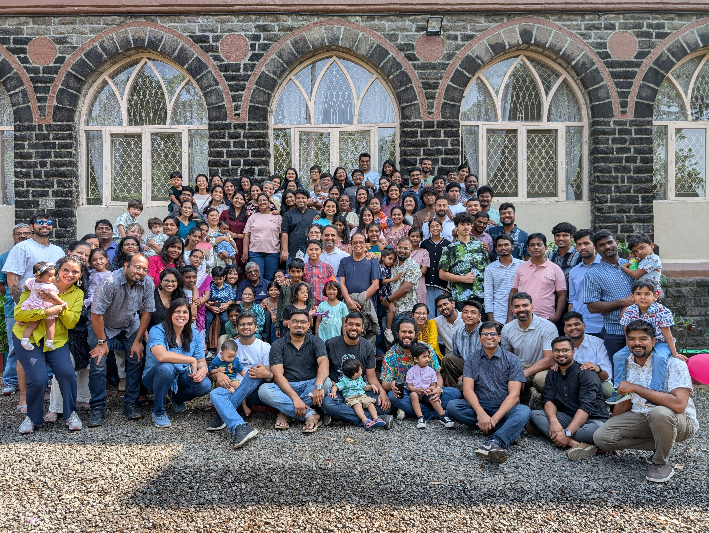
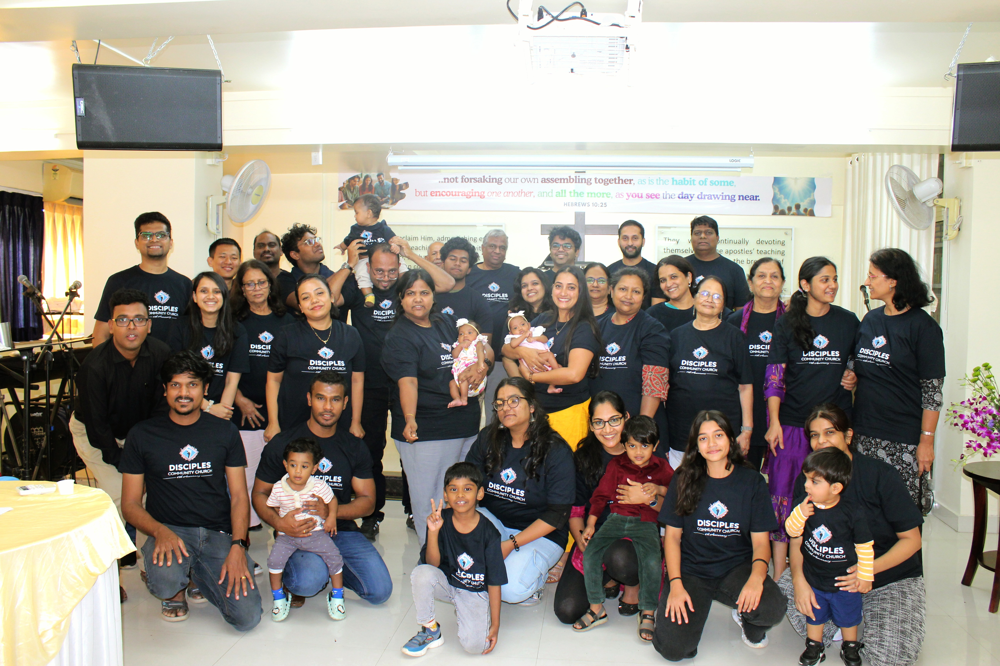

WELCOME!
WE'RE GLAD YOU'RE HERE.



Welcome to Disciples Community Church. Our mission is to remain firmly rooted in the truths of Scripture, and from that foundation, to worship and glorify God in Christ. From this same conviction, we seek to reach those outside God’s fold—sharing Christ’s love through faithful witness and compassionate service, using every rightful means.

SERMONS
LATEST TEACHINGS
Browse and listen to the latest sermons and explore our archive of past years' teachings. Grow deeper in your understanding of God's Word.
EVENTS
COMING UP
Explore the upcoming events at Disciples Community Church. Join us for worship, home fellowships, special events and more as we grow together!
MINISTRIES
AT DCC
Discover the various ministries at Disciples Community Church and find where you can grow and serve. There is a place for everyone.
WHAT
WE TEACH
Our doctrine is rooted in the Word of God and empowered by the Holy Spirit. We believe in the transformative power of the Gospel.
UPCOMING EVENTS
VIEW ALL UPCOMING EVENTSNo upcoming events scheduled at this time.
PLAN YOUR VISIT
We can't wait to meet you! Here's everything you need to know for your first time at Disciples Community Church.
Service Timings
Our Sunday service starts at 10:30 AM. We recommend arriving 10-15 minutes early for parking and settling in. Street parking is available, and we also have a small parking lot for bikes.
Expository Preaching
Disciples Community Church is firmly committed to unleashing the life-transforming power of God's Word through verse-by-verse exposition of the sacred text so that the name of the Lord Jesus Christ is spread to all people as "The King of Glory!"
Fellowship Lunch
Join us for a free fellowship lunch after the service every Sunday. It's a great opportunity to connect and build new relationships and get to know us better!